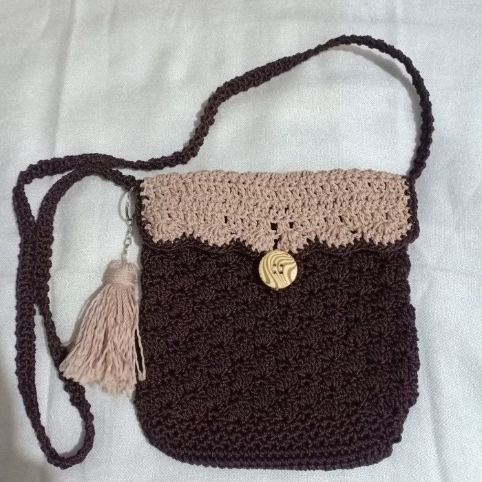
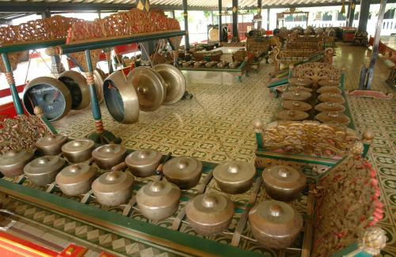
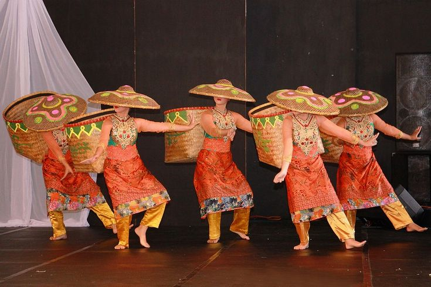
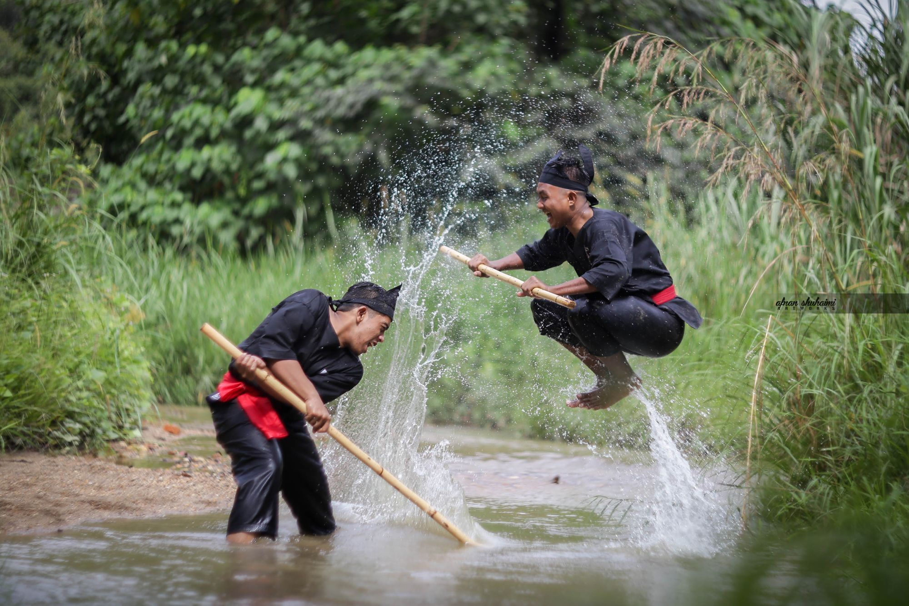
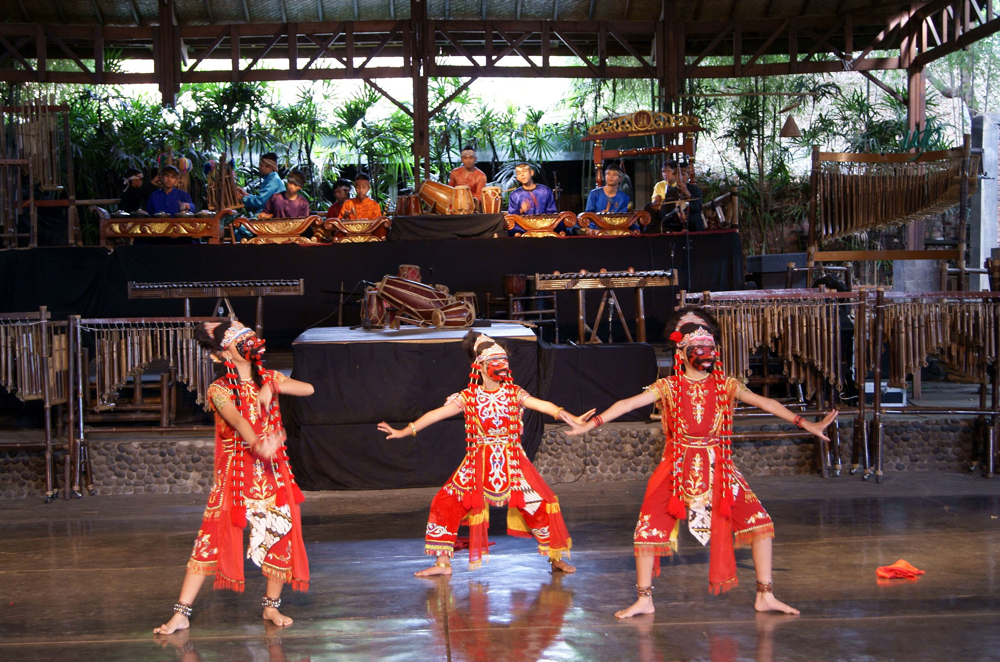
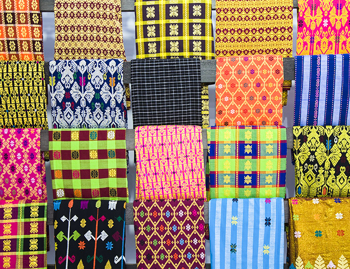
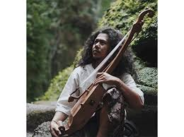
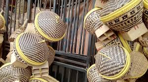

Temukan kekayaan budaya dan seni dari Cisarua melalui berbagai karya seperti tari tradisional, kerajinan
tangan, pertunjukan musik, dan peninggalan budaya lainnya yang terus dilestarikan oleh masyarakat lokal.

Kerajinan Rajutan

Seni Pertunjukan Goong Renteng

Tari Panarat
Patung Dewi Kencana

Pencak Silat Cimande

Tari Jaipong dan Angklung

Sarung Tenun Tradisional
Karinding

Tarawangsa
Puncak Culture Session
Sanggar Seni Studio Seni Indonesia (SSI)

Kerajinan Bambu Cisarua